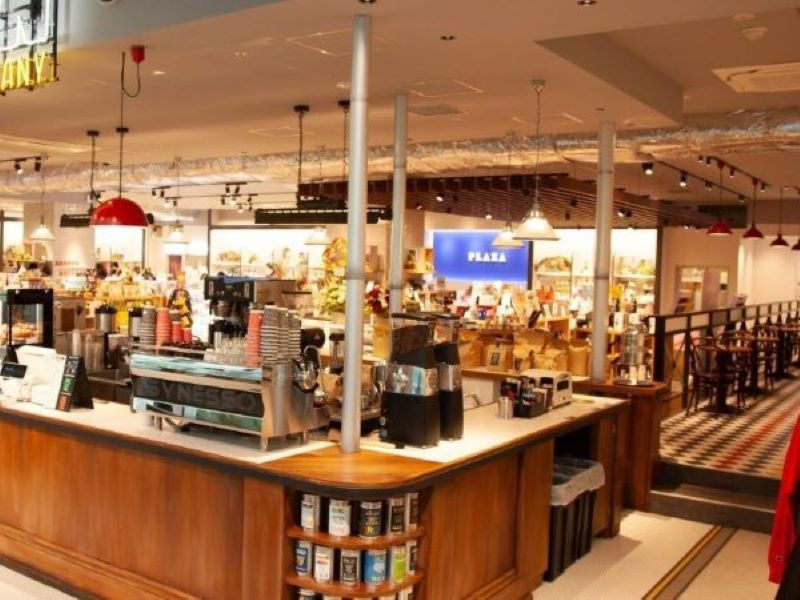
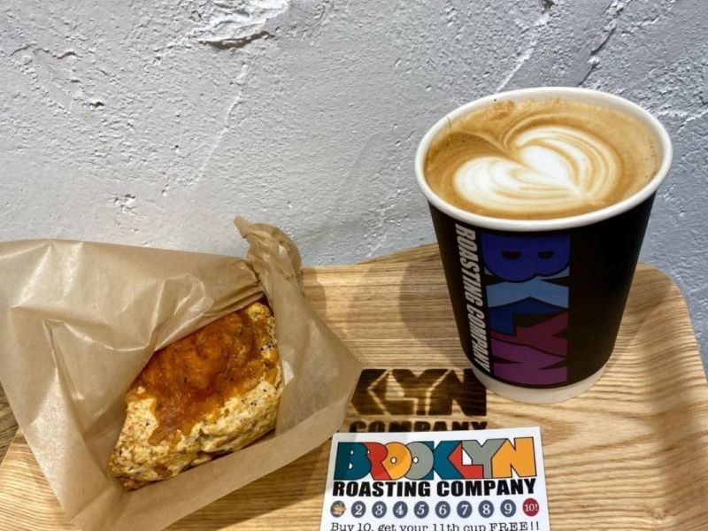
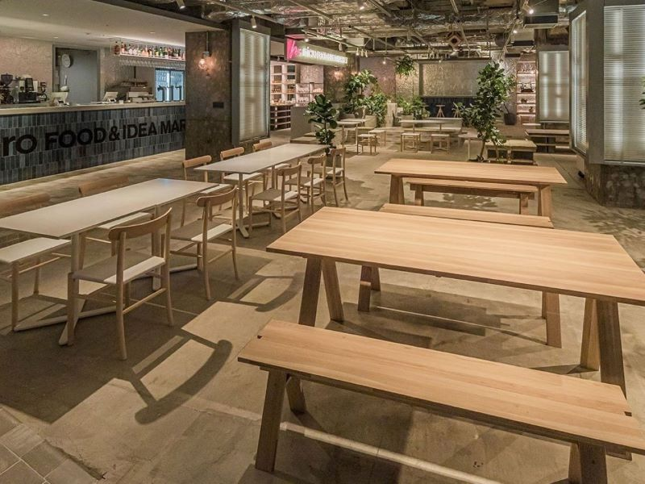
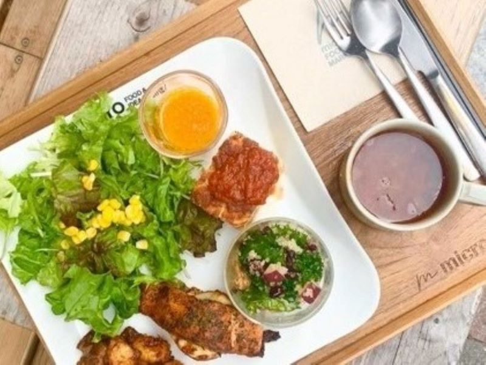
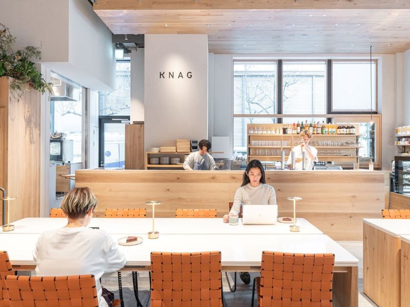
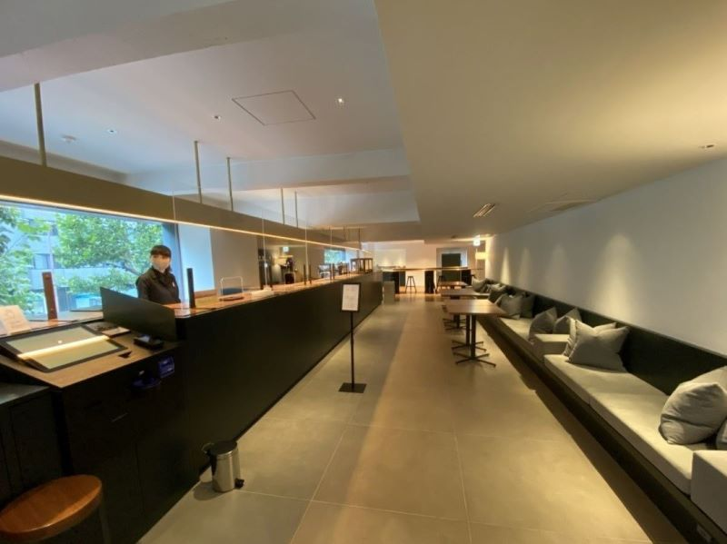
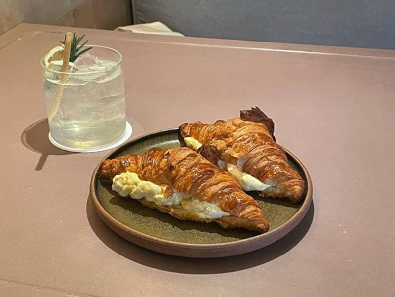

国際フォーラム内にあるモダンなアメリカンテイストカフェです。
大きなテーブル席があり、作業している人も多いです。
1.BROOKLYN ROASTING COMPANY

新感覚の惣菜スコーン「BRCスコーン」

おすすめのメニューは、BRCスコーンです。
ベーコンの入ったしょっぱい系のスコーンがたまらなく美味しいです。
「BROOKLYN ROASTING COMPANY」の基本情報
| 定休日 | なし |
|---|---|
| 営業時間 | [月-土]12:00-21:00 [日]11:00-21:00 |
| アクセス | 有楽町駅（徒歩5分） |
| 地図 |
2.micro FOOD & IDEA MARKET

バーとしても営業しており、スタイリッシュなデザインが特徴です。
デリプレートでは、日本各地の食材を楽しめます。
日本各地の食材を詰め込んだ「デリプレート」

おすすめは、不動の人気デリプレートです。
日によって変わるヘルシーなデリを堪能できます。
「micro FOOD & IDEA MARKET」の基本情報
| 定休日 | なし |
|---|---|
| 営業時間 | 11:00-21:00 |
| アクセス | 日比谷線日比谷駅（徒歩2分）有楽町線有楽町駅（徒歩3分） |
| 地図 |
3.KNAG

木の温かみを感じることができるコミュニティカフェです。
誰でもほっと一息つけるような素敵な空間です。
デーツを使用した「チュニジアンアイス」
おすすめのメニューは、チュニジアンアイスです。
他では食べられない珍しいフレーバーです。
「KNAG」の基本情報
| 定休日 | なし |
|---|---|
| 営業時間 | 平日8:00-22:00 土日10:00-21:00 |
| アクセス | 東京メトロ日本橋駅（徒歩2分） |
| 地図 |
4.abno

DDD Hotelに併設されているカフェです。
ラグジュアリーな空間で、時間が経つのを忘れてしまいます。
流行りのクロワッサンサンド「たまごサンド」

おすすめのメニューはたまごサンドです。
クロワッサンとたまごのバランスが最高です。
「abno」の基本情報
| 定休日 | なし |
|---|---|
| 営業時間 | 7:00-23:00 |
| アクセス | 都営浅草線浅草橋駅（徒歩5分） |
| 地図 |